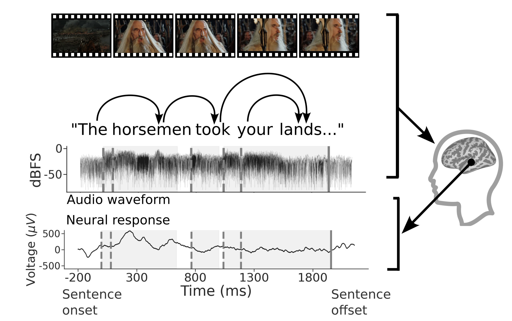
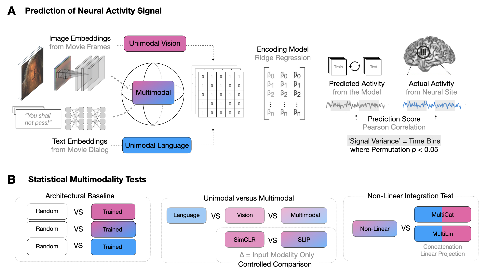
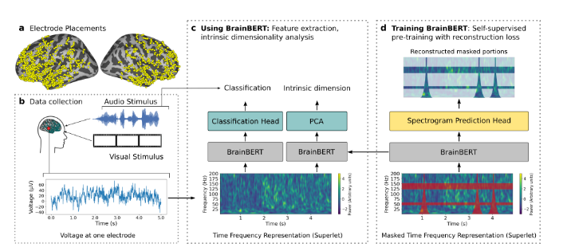

Research
My research interests mainly include multimodal deep learning, particularly NLP/computer vision, and neural network interpretability, with a touch of neuroscience/cognitive science. I highlight some publications below -- see my scholar for a more complete list.
|
|

|
**NEW** Brain Treebank: Large-scale intracranial recordings from naturalistic language stimuli
Christopher Wang*,
Adam Uri Yaari*,
Aaditya K Singh,
Vighnesh Subramaniam,
Dana Rosenfarb,
Jan DeWitt,
Pranav Misra,
Joseph R. Madsen,
Scellig Stone,
Gabriel Kreiman,
Boris Katz,
Ignacio Cases,
Andrei Barbu
Neural Information Processing Systems Datasets and Benchmarks Track, 2024 (Oral, Top 1%)
Dataset /
arXiv
The Brain Treebank is finally released! This is a large-scale dataset of intracranial recordings while subjects watch movies. We collected recordings from 10 subjects across 43 total hours. In total, subjects heard 36,000 sentences (205,000 words), while they had on average 167 electrodes implanted.
|
|

|
Revealing Vision-Language Integration in the Brain with Multimodal Networks
Vighnesh Subramaniam,
Colin Conwell,
Christopher Wang,
Gabriel Kreiman,
Boris Katz,
Ignacio Cases,
Andrei Barbu
International Conference on Machine Learning, 2024
International Conference on Learning Representations: Workshop on Multimodal Representation Learning, 2023
Project Page /
arXiv /
Code
Multimodal deep networks of vision and language are used to localize sites of vision-language integration in the brain and identify architectural motifs that are most similar to computations in the brain.
|
|

|
BrainBERT: Self-supervised representation learning for intracranial recordings
Christopher Wang,
Vighnesh Subramaniam,
Adam Uri Yaari,
Gabriel Kreiman,
Boris Katz,
Ignacio Cases,
Andrei Barbu
International Conference on Representation Learning, 2023
arXiv
/
Code
BrainBERT is a transformer-based model that learns representations on intracranial recordings for improved linear decodability from the brain.
|
|
{kind=link}